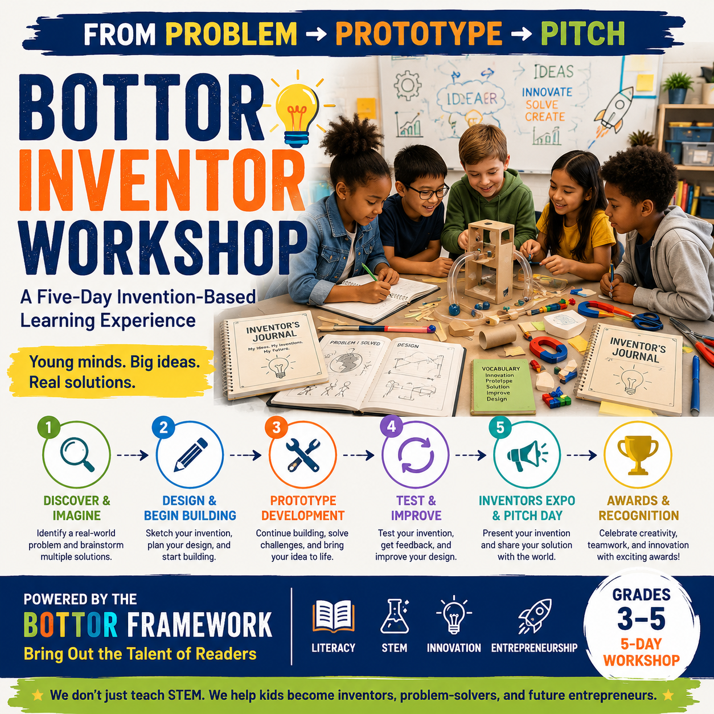

The Bottor Inventor Workshop is a five-day invention-based learning experience where students identify real-world problems, build prototypes, strengthen literacy, and present innovative solutions.
Your donation is tax-deductible.
Bottor Learning Foundation is a 501(c)(3) nonprofit organization. Donations are tax-deductible as allowed by law. EIN: 41-3321544.
Join us for a community hangout celebrating music, storytelling, and literacy.
📅 September 5, 2026 | 🕙 10AM – 3PM
📍 Event Location: Kuumba Juice + Coffee — 274 E. Keefe Ave, Milwaukee, WI 53212
A free community hangout hosted by Vision Minds Ent and Bottor Learning Foundation, in partnership with Kuumba Juice + Coffee, featuring:
Advance literacy, innovation, and STEM through invention-based learning that empowers young inventors, creative problem-solvers, and future entrepreneurs.
Through our flagship Bottor Inventor Workshop, students don't just learn about STEM and literacy — they use both to identify real problems, design working prototypes, and pitch their ideas with confidence.
Every workshop is guided by The BOTTOR Framework — Bring Out the Talent of Readers — our teaching philosophy for weaving reading, vocabulary, and communication into hands-on invention, with Professor WiggleWoo guiding students as their inventor mentor.
Learn More About Us
Inventing gives students a reason to read, write, and think critically — turning literacy and STEM skills into tools for solving real problems, not separate subjects to memorize.
Learning by inventing builds real literacy. Reading instructions, researching a problem, documenting progress in an Inventor's Journal, and pitching an idea out loud all strengthen reading comprehension, vocabulary, and communication.
Prototyping teaches persistence. Every successful invention goes through multiple rounds of testing and revision — students learn firsthand that failure is part of the design process, not the end of it.
Pitching builds confidence. Presenting a real invention to parents, teachers, and community members gives students practice in public speaking and self-advocacy they'll use far beyond the workshop.
Access to hands-on invention opportunities remains unequal. Many students — especially in underserved communities — never get the chance to build, test, and present an original idea. The Bottor Inventor Workshop is designed to close that gap.
Our flagship program — a five-day journey from problem to prototype to pitch, with literacy woven into every step.
Students identify a real-world problem and brainstorm creative solutions to bring to life.
Hands-on prototyping with affordable, accessible materials — from cardboard to craft sticks.
Every student documents their journey from idea to invention, reinforcing literacy at every step.
Students present their inventions at a culminating Inventors Expo and take home a certificate of completion.
BOTTOR stands for Bring Out the Talent of Readers — our teaching methodology for weaving literacy into every part of the invention process.
Our inventor mentor character guides students through the workshop, making the invention process playful and personal.
Each workshop introduces 6–8 invention-related words that students read, discuss, and must use correctly during their final pitch.
Students take on real team roles — Team Leader, Research Lead, Design Lead, Prototype Builder, Testing Lead, and Pitch Presenter.
Students learn that every invention goes through trial and error — and multiple revisions — before it succeeds.
Students practice explaining and defending their ideas, culminating in a public pitch at the Inventors Expo.
A short session introduces what happens after you invent something — including patents and starting a business.
Headquartered in Wisconsin, Bottor Learning Foundation delivers the Bottor Inventor Workshop through foundation-hosted cohorts, in-school residencies, and library and community center partnerships. Our goal is to bring hands-on invention experiences to more Wisconsin students and, over time, to communities nationwide.
Hands-on invention experiences for students in grades 3–5 across Wisconsin
Stronger literacy and communication skills built through every invention
Flexible delivery through schools, libraries, and community partners
Expanding the Inventor Workshop to communities nationwide
The Inventor Workshop is our flagship program — but it's not the only way we advance literacy and access. See what else we do beyond the workshop →
The people guiding Bottor Learning Foundation's mission to bring the Bottor Inventor Workshop to students and communities.
President
Byron Brown serves as President of Bottor Learning Foundation, working with educators and community partners to expand access to the Bottor Inventor Workshop for students across Wisconsin and beyond.
Treasurer
Sharlane Gunn serves as Treasurer of the foundation, helping oversee financial stewardship and ensuring resources are responsibly directed toward expanding the Bottor Inventor Workshop.
Secretary
Jeremy Waddy-Woods serves as Secretary of Bottor Learning Foundation, supporting organizational governance and helping maintain transparency and accountability in the foundation's operations.